Jenis Jenis Ram Dan Memori Eksternal
Publisher : Ahmad Fauzi Allagan
NPM : 20119321
RAM
Pengertian RAMRAM atau Random Access Memory merupakan salah satu komponen penting dalam komputer. RAM dapat menyimpan data sementara saat komputer sedang dioperasikan, dan akan hilang saat daya komputer dimatikan. Jadi, walaupun RAM ini sejenis memori, namun hanya berfungsi saat perangkat dalam keadaan hidup saja. RAM seringkali jadi permasalahan sebagian orang saat ingin membeli suatu perangkat semisal ponsel atau komputer. Biasanya yang dipilih adalah RAM dengan ukuran yang besar agar perangkat dapat bekerja lebih cepat. Apakah RAM ini hanya sejenis saja dengan berbagai ukuran? Tentu saja tidak! Ada berbagai macam RAM berbeda yang digunakan dalam banyak perangkat elektronik, dalam hal ini adalah komputer. Apa saja jenis RAM tersebut? Berikut adalah bahasan mengenai jenis-jenis RAM untuk komputer. (Sumber : © Cari Sinyal)
Jenis Jenis RAMJenis RAM komputer memang memiliki banyak varian. Mulai dari DRAM, SDRAM, RDRAM, SRAM, EDORAM, FPM DRAM RAM, dan masih ada lagi. Jika berdasarkan fungsi RAM mungkin sama namun pembedanya ada pada kapasitas dan kecepatan akses datanya. Adapun pengertian RAM secara harfiah sendiri adalah tempat penyimpanan memori sementara ketika komputer tengah digunakan. Jadi memori penyimpanan RAM memang bersifat tak permanen. Artinya, ketika komputer mati RAM akan kembali kosong dan akan terpakai setelah dinyalakan kembali saat beraktivitas. Misalkan, ketika kamu mengetik sebuah dokumen di Microsoft Word, kemudian kamu tutup tanpa menyimpan terlebih dahulu, dokumen yang kamu ketik akan tersimpan di memori RAM. Maka, kamu bisa membuka dokumen tersebut melalui history terakhir dari Microsoft word tadi. Melihat definisinya, RAM adalah Random Access Memory merupakan tempat untuk menyimpan data sementara ketika komputer atau laptop sedang dijalankan dan dapat diakses secara acak. Fungis RAM memang sangat vital. Karena kinerjanya harus gegas untuk memroses data yang masuk secara beragam ke memori. Tak heran, semakin besar RAM yang dipasang, semakin cepat komputer bekerja. Para gamer pun sangat mengidamkan jenis RAM besar untuk memenuhi hasrat berpetualang. Dengan kehadiran RAM yang lega otomatis gejala lag di game berat bisa diminimalisir. (Sumber : © Cari Sinyal)
1. DRAM 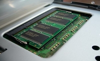DRAM atau Dynamic Random Access Memory adalah tipe RAM yang umum digunakan dalam komputer. Jenis memori ini biasanya digunakan untuk data atau kode program yang harus dijalankan oleh prosesor komputer. DRAM menyimpan setiap bit data atau kode program dalam sel penyimpanan yang terdiri dari kapasitor dan transistor, dan biasanya diatur dalam konfigurasi sel penyimpanan persegi panjang. Kelebihan DRAM adalah desainnya yang sederhana, kecepatan yang baik (4,7 Mhz hingga 40 Mhz) dan biaya produksi yang rendah dibandingkan dengan jenis memori alternatif lainnya. Namun DRAM juga memiliki kelemahan, yang salah satunya adalah konsumsi daya yang relatif tinggi dibanding yang lain (Sumber : © Cari Sinyal)
2. SDRAM 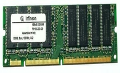SDRAM atau Synchronous Dynamic Random Access Memory adalah DRAM yang disinkronkan dengan sistem bus bentuk memori semikonduktor DRAM yang dapat berjalan pada kecepatan yang lebih tinggi dari pada DRAM konvensional (kecepatannya berkisar antara 100 Mhz – 133 Mhz). SDRAM ini sebenarnya menyinkronkan dirinya dengan bus CPU dan mampu berjalan pada 133 MHz, sekitar tiga kali lebih cepat daripada FPM RAM konvensional, dan sekitar dua kali lebih cepat dari EDO DRAM dan BEDO DRAM. SDRAM menggantikan EDO DRAM di banyak komputer baru. (Sumber : © Cari Sinyal)
3. RDRAM 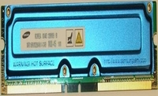RDRAM adalah singkatan dari Rambus Dynamic Random Access Memory. Ini adalah jenis RAM yang dibuat oleh Rambus dan merupakan jenis memori komputer tercepat yang tersedia. SDRAM umumnya dapat mentransfer data dengan kecepatan hingga 133 MHz, sementara RDRAM standar dapat melakukannya lebih dari 1 GHz. Meskipun beberapa motherboard dapat menggunakan RDRAM sebagai memori sistem, namun kebanyakan mobo tidak sepenuhnya dapat memanfaatkan kecepatan RDRAM yang sangat cepat. Oleh karena itu, RDRAM biasanya digunakan untuk memori video pada kartu grafis akselerator, untuk memori cache (terletak di CPU), dan untuk memori sistem di workstation dan server berkinerja tinggi.
4. SRAM 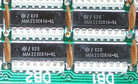Singkatan dari Static Random Access Memory, SRAM adalah jenis RAM yang menyimpan data menggunakan metode statis. Artinya SRAM ini bekerja dengan cara statis, yakni data tetap konstan (tidak ada perubahan) selama daya listrik dipasok ke chip memori. SRAM berbeda dengan DRAM yang menyimpan data secara dinamis dan terus-menerus perlu me-refresh data yang disimpan dalam memori. Karena SRAM menyimpan data secara statis, tipe memori dapat berjalan lebih cepat dan membutuhkan daya yang lebih kecil daripada DRAM. SRAM ini lebih mahal untuk diproduksi daripada DRAM. Hal itu karena memori ini dibuat menggunakan struktur yang lebih kompleks. Kerumitan ini juga membatasi jumlah data yang dapat disimpan oleh satu chip. Ini berarti chip SRAM tidak dapat menyimpan data sebanyak chip DRAM. Jika DRAM paling sering digunakan sebagai memori utama pada komputer, maka SRAM umumnya digunakan dalam aplikasi yang lebih kecil, seperti memori cache CPU dan buffer hard drive. SRAM juga digunakan dalam barang elektronik lainnya, dari yang berukuran besar hingga yang kecil seperti mainan anak-anak. (Sumber : © Cari Sinyal)
5. EDORAM 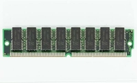EDO (Extended Data Output) RAM adalah sejenis chip RAM yang meningkatkan waktu membaca dari memori pada mikroprosesor yang lebih cepat seperti Intel Pentium. EDO RAM awalnya dioptimalkan untuk Pentium 66 MHz. Untuk komputer yang lebih cepat direkomendasikan menggunakan SDRAM. RAM jenis ini diperkenalkan pada tahun 1994 dan mulai menggantikan DRAM mode halaman cepat pada tahun 1995 ketika Intel pertama kali memperkenalkan chipset 430FX yang mendukung EDO DRAM. (Sumber : © Cari Sinyal)
6. NV-RAM 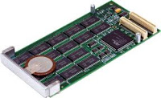NV-RAM (Non-Volatile Random Access Memory) merupakan jenis RAM yang menggunakan baterai Litium di dalamnya sehingga data yang tersimpan tidak akan hilang meskipun satu daya dimatikan (Sumber : © Anonymous)
7. FPM DRAM 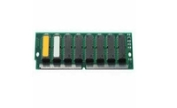FPM DRAM (Fast Page Mode Dynamic Random Access Memory) adalah memori dinamis dengan akses halaman cepat yang memastikan kinerja yang lebih tinggi daripada DRAM konvensional. Sebelum bentuk yang lebih baru dari DRAM, FPM DRAM (Fast Page Mode DRAM) adalah jenis DRAM yang paling umum digunakan dalam komputer. Mode halaman DRAM pada dasarnya mengakses barisan RAM tanpa harus terus-menerus menetapkan kembali barisan tersebut.
8. SDR SDRAMSDR SDRAM adalah istilah yang diperluas untuk SDRAM (dua jenis RAM yang sama) tetapi paling sering disebut sebagai SDRAM saja. SDR atau Single Data Rate di sini menunjukkan bagaimana memori yang ini memproses instruksi satu membaca dan satu menulis per siklus jam. Selain komputer, produk lain yang menggunakan jenis RAM ini adalah video game konsol.
9.DDR SDRAM 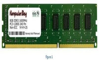DDR (Double Data Rate) SDRAM beroperasi seperti halnya SDR SDRAM, hanya saja bekerja dua kali lebih cepat. DDR SDRAM mampu memproses instruksi dua baca dan dua tulis per siklus jam. Meskipun memiliki kesamaan dalam fungsi, DDR SDRAM memiliki perbedaan fisik (184 pin dan satu notch pada konektor) dibandingkan dengan SDR SDRAM (168 pin dan dua notch pada konektor). DDR SDRAM juga bekerja pada tegangan standar yang lebih rendah (2,5 V dari 3,3 V). DDR2 SDRAM adalah upgrade evolusioner dari DDR SDRAM yang bekerja lebih cepat karena dapat berjalan pada kecepatan clock yang lebih tinggi. Standar modul memori DDR bekerja di atas 200 MHz, sedangkan modul memori DDR2 standar ada di atas 533 MHz. Konsumsi daya DDR2 SDRAM adalah 1,8 V). DDR3 SDRAM merupakan peningkatan dari DDR2 SDRAM dengan pemrosesan sinyal berkelanjutan, kapasitas memori yang lebih besar, konsumsi daya yang lebih rendah (1,5 V), dan kecepatan clock standar yang lebih tinggi (hingga 800 Mhz). DDR4 SDRAM adalah peningkatan yang lebih tinggi lagi dari DDR3 SDRAM dengan pemrosesan sinyal yang lebih canggih, kapasitas memori yang lebih besar, bahkan konsumsi daya yang lebih rendah (1,2 V), serta kecepatan clock standar yang lebih tinggi (hingga 1600 Mhz). DDR4 SDRAM adalah tipe RAM yang sekarang banyak dijual di pasaran (saat artikel ini dibuat). Ada banyak vendor yang menjual DDR4 SDRAM ini, mulai dari yang biasa saja sampai ada vendor yang menawarkan RAM dengan kualitas terbaik. Banyaknya tipe DDR4 SDRAM yang dijual di pasaran karena komputer maupun laptop terbaru umumnya sekarang sudah menggunakan DDR4 SDRAM. Oh yah, DDR3 SDRAM juga masih cukup banyak dijual mengingat banyak komputer dan laptop yang masih menggunakan tipe RAM ini. Rate Synchronous Dynamic Random Access Memory.
× DDR SDRAM Kelajuan : 266MHz (PC2100), 333MHz (PC2700), 400MHz (PC3200) Kapasitas Maksimum : 1 GB (ada chip pada lapisan depan dan belakang RAM)
× DDR II Kelajuan : 533MHz (PC4200), 667MHz (PC5300), 800MHz (PC6400) Kapasitas Maksimum : 2 GB
× DDR III Kelajuan : 1333MHz (PC10666) Kapasitas Maksimum : 4 GB
EVOLUSI MODUL MEMORI RAMSelain mengalami perkembangan pada sisi kemampuan, teknik pengolahan modul memori juga dikembangkan. Dari yang sederhana yaitu SIMM sampai RIMM
10. SIMM 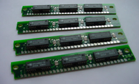Kependekan dari Single In-Line Memory Module, artinya modul atau chip memori ditempelkan pada salah satu sisi sirkuit PCB. Memori jenis ini hanya mempunyai jumlah kaki (pin) sebanyak 30 dan 72 buah. SIMM 30 pin berupa DRAM, banyak digunakan pada sistem berbasis prosessor 386 generasi akhir dan 486 generasi awal. SIM 30 pin berkapasitas 1MB, 4MB dan 16MB. Sedangkan SIMM 70 pin dapat berupa DRAM maupun EDO DRAM yang digunakan bersama prosessor 486 generasi akhir dan Pentium. SIMM 70 pin diproduksi pada kapasitas 4MB, 8MB, 16MB, 32MB, 64MB dan 128MB. (Sumber : © Anonymous)
12. DIMM 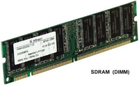Kependekan dari Dual In-Line Memory Module, artinya modul atau chip memori ditempelkan pada kedua sisi PCB, saling berbalikan. Memori DIMM diproduksi dalam 2 bentuk yang berbeda, yaitu dengan jumlah kaki 168 dan 184. DIMM 168 pin dapat berupa Fast-Page, EDO dan ECC SDRAM, dengan kapasitas mulai dari 8MB, 16MB, 32MB, 64MB dan 128MB. Sementara DIM 184 pin berupa DDR SDRAM (Sumber : © Anonymous)
13. RIMM 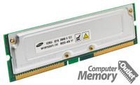RIMM dan SORIMM merupakan jenis memori yang dibuat oleh Rambus. RIMM pada dasarnya sama dengan DIMM dan SORIMM mirip dengan SODIMM. Karena menggunakan teknologi dari Rambus yang terkenal mengutamakan kecepata, memori ini jadi cepat panas sehingga pihak Rambus perlu menambahkan aluminium untuk membantu melepas panas yang dihasilkan oleh memori ini. (Sumber : © Anonymous)
Memory Eksternal
Komputer adalah sebuah mesin hitung elektronik yang secara cepat menerima informasi masukan digital dan mengolah informasi tersebut menurut seperangkat instruksi yang tersimpan dalam komputer tersebut dan menghasilkan keluaran informasi yang dihasilkan setelah diolah.Daftar perintah tersebut dinamakan program komputer dan unit penyimpanannya adalah memori komputer. Memori adalah bagian dari komputer tempat program – program dan data – data disimpan. Bebarapa pakar komputer (terutama dari Inggris) menggunakan istilah store atau storage untuk memori, meskipun kata storage sering digunakan untuk menunjuk ke penyimpanan disket. Tanpa sebuah memori sebagai tempat untuk mendapatkan informasi guna dibaca dan ditulis oleh prosesor maka tidak akan ada komputer – komputer digital dengan system penyimpanan program. Walaupun konsepnya sederhana, memori komputer memiliki aneka ragam jenis, teknologi, organisasi, unjuk kerja dan harganya. Memori internal adalah memori yang dapat diakses langsung oleh prosesor. Sebenarnya terdapat beberapa macam memori internal, yaitu register yang terdapat di dalam prosesor, cache memori dan memori utama berada di luar prosesor. Sedangkan memori eksternal adalah memori yang diakses prosesor melalui piranti I/O, seperti disket dan hardisk. Memori merupakan bagian dari komputer yang berfungsi sebagai tempat penyimpanan informasi yang harus diatur dan dijaga sebaik-baiknya. Memori biasanya disebut juga dengan istilah : computer storage, computer memory atau memory, merupakan piranti komputer yang digunakan sebagai media penyimpan data dan informasi saat menggunakan komputer. Memorimerupakan bagian yang penting dalam komputer modern dan letaknya di dalam CPU (Central Processing Unit). Komponen utama dalam sistem komputer adalah Arithmetic Logic Unit (ALU), Control Circuitry, Storage Space dan piranti Input/Output. Jika tanpa memory, maka komputer hanya berfungsi sebagai digital signal processing devices, contohnya kalkulator atau media player. Kemampuan memory untuk menyimpan data, instruksi dan informasi-lah yang membuat komputer dapat disebut sebagai general-purpose komputer.Komputer merupakan piranti digital, maka informasi disajikan dengan sistem bilangan binary. Teks, angka, gambar, sudio dan video dikonversikan menjadi sekumpulan bilangan binary (binary digit atau disingkat bit). Sekumpulan bilangan binary dikenal dengan istilah BYTE, dimana 1 byte = 8 bits. Semakin besar ukuran memory-nya maka semakin banyak pula informasi yang dapat disimpan di dalam komputer (storage devices).Berikut ini beberapa gambar yang bisa mewakili bagaimana cara informasi disimpan dalam memory dan bagaimana data ditransfer dari satu bagian ke bagian lainnya. (Sumber : © Aditya Nugraha)
Jenis Jenis Memory Eksternal
Magnetik Disk
Disk adalah piringan bundar yang terbuat dari bahan tertentu (logam atau plastik) dengan permukaan dilapisi bahan yang dapat di magnetisasi. Mekanisme baca/tulis menggunakan kepala baca atau tulis yang disebut head, merupakan komparan pengkonduksi (conducting coil). Desain fisiknya, head bersifat stasioner sedangkan piringan disk berputar sesuai kontrolnya. Layout data pada disk diperlihatkan pada gambar 1.1 dan gambar 1.2. Terdapat dua metode layout data pada disk, yaitu constant angular velocity dan multiple zoned recording. Disk diorganisasi dalam bentuk cincin – cincin konsentris yang disebut track. Tiap track pada disk dipisahkan oleh gap. Fungsi gap untuk mencegah atau mengurangi kesalahan pembacaan maupun penulisan yang disebabkan melesetnya head atau karena interferensi medan magnet. Sejumlah bit yang sama akan menempati track – track yang tersedia. Semakin ke dalam disk maka kerapatan (density) disk akan bertambah besar. Data dikirim ke memori ini dalam bentuk blok, umumnya blok lebih kecil kapasitasnya daripada track. Blok – blok data disimpan dalam disk yang berukuran blok, yang disebut sector. Sehingga track biasanya terisi beberapa sector, umumnya 10 hingga 100 sector tiap tracknya. Bagaimana mekanisme membacaan maupun penulisan pada disk ? Head harus bisa mengidentifikasi titik awal atau posisi – posisi sector maupun track. Caranya data yang disimpan akan diberi header data tambahan yang menginformasikan letak sector dan track suatu data. Tambahan header data ini hanya digunakan oleh sistem disk drive saja tanpa bisa diakses oleh pengguna. Header data yang digunakan disk drive menemukan letak sector dan tracknya. Byte SYNCH adalah pola bit yang menandakan awal field data. (Sumber : © Aditya Nugraha)
FLOPPY DISKDengan berkembangnya komputer pribadi maka diperlukan media untuk mendistribusikan software maupun pertukaran data. Solusinya ditemukannya disket atau floppy disk oleh IBM. Karakteristik disket adalah head menyentuh permukaan disk saat membaca ataupun menulis. Hal ini menyebabkan disket tidak tahan lama dan sering rusak. Untuk mengurangi kerusakan atau aus pada disket, dibuat mekanisme penarikan head dan menghentikan rotasi disk ketika head tidak melakukan operasi baca dan tulis. Namun akibatnya waktu akses disket cukup lama. Gambar 1.6. memperlihatkan bentuk floppy disk. Floppy disk drive yang menjadi standar pemakaian terdiri dari 2 ukuran yaitu 5.25” dan 3.5” yang masing-masing memiliki 2 tipe kapasitas Double Density (DD) dan High Density (HD). Floppy disk 5.25” kapasitasnya adalah 360 Kbytes (untuk DD) dan 1.2 Mbytes (untuk HD). Sedangkan floppy disk 3.5” kapasitasnya 720 Kbytes (untuk DD) dan untuk HD). Kapasitas yang dapat ditampung oleh floppy disk memang cenderung kecil, apalagi jika dibandingkan dengan kebutuhan transfer dan penyimpanan data yang makin lama makin besar. Floppy disk hanya dapat menyimpan file teks, karena keterbatasan kapasitas. Walaupun demikian, penulisan pada floppy disk dapat dilakukan berulang-ulang, walaupun memakan waktu yang relatif lama. Keterbatasan yang disebut dengan Iomega Zip Drive. Perangkat ini terdiri dari floppy drive dan cartridge floppy khusus, yang mampu menampung samapai hampir 100MB data. Jumlah ini jelas memungkinkan untuk menampung file multimedia dan grafik (biasanya berukuran mega bytes), yang sebelumnya tidak dimungkinkan untuk disimpan dalam floppy disk. (Sumber : © Aditya Nugraha)
HARDDISKHarddisk adalah sebuah komponen perangkat keras yang menyimpan data sekunder dan berisi piringan magnetis. Harddisk diciptakan pertama kali oleh insinyur IBM, Reynold Johnson di tahun 1952. Harddisk pertama tersebut terdiri dari 50 piringan berukuran 2 kaki (0,6 meter) dengan kecepatan rotasinya mencapai 1.200 rpm (rotation per minute) dengan kapasitas penyimpanan 5 MB. Harddisk zaman sekarang sudah ada yang hanya selebar 0,6 cm dengan kapasitas 750 GB. Jika dibuka, terlihat mata cakram keras pada ujung lengan bertuas yang menempel pada piringan yang dapat berputar. Rangkaian penguat, DSP (digital signal precessor), chip memory, konektor, spindle, dan actuator arm motor controller. arus membongkar CP sampai dengan Gbytes. Ukuran kapasitas yang sangat besar ini sangat menguntungkan dalam hal penyimpanan data. Seperti halnya floppy disk dan Iomega Zip drive, harddisk juga dapat menangani penulisan berulang kali dengan kecepatan yang relatif jauh lebih cepat dibandingkan dengan floppy disk. Tapi sayangnya, terdapat kendala dalam segi mobilitas, karena untuk memindah-mindahkan harddisk berarti h(harddisk tersimpan di dalam CPU). Ternyata, kendala ini telah dapat diatasi dengan adanya konsep Removable Harddisk. Hardsik dibentuk berupa cartridge, yang dipasang pada removable rack yang terambung pada power supplay dan kabel data IDE Interface-nya. Data yang disimpan dalam harddisk tidak akan hilang ketika tidak diberi tegangan listrik. Dalam sebuah harddisk, biasanya terdapat lebih dari satu piringan untuk memperbesar kapasitas data yang dapat ditampung. Dalam perkembangannya kini harddisk secara fisik menjadi semakin tipis dan kecil namun memiliki daya tampung data yang sangat besar. Harddisk kini juga tidak hanya dapat terpasang di dalam perangkat (internal) tetapi juga dapat dipasang di luar perangkat (eksternal) dengan menggunakan kabel USB (Sumber : © Aditya Nugraha)
Demikian Artikel Ini Dibuat Sebagaimana Dari Sumber yang tercantum
~Terimakasih